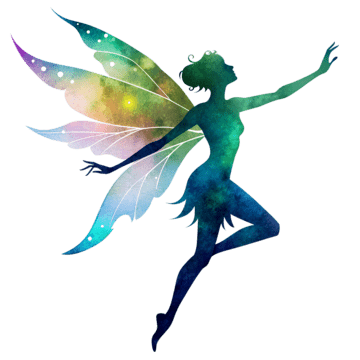
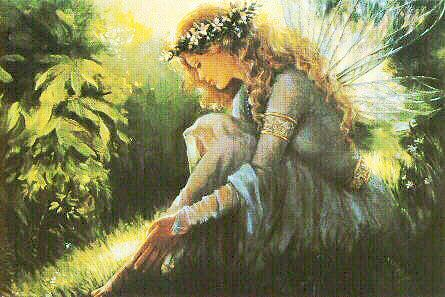

Espíritus protectores de la naturaleza y el destino.
Es un espíritu fantástico humanoide. Según la tradición son espíritus protectores de la naturaleza, pertenecientes a la misma familia de los elfos, gnomos y duendes (en algunas tradiciones se plantea el uso de la palabra "hada" para referirse a toda esta familia de seres mágicos). En la actualidad suelen representarse con forma de mujer (aunque también habría hombres) con alas brillantes.

Características
Estos seres se caracterizan por tener forma humana con la habilidad innata de manipular la magia, con largos periodos de vida (en algunos casos, son inmortales) y permaneciendo invisibles u ocultos ante el ojo humano. Se conoce un caso en el que Sir Arthur Conan Doyle, creador de Sherlock Holmes, fue engañado por unas niñas que se fotografiaron con figuras de papel en forma de hadas, a las que el consagrado escritor atribuyó autenticidad.
